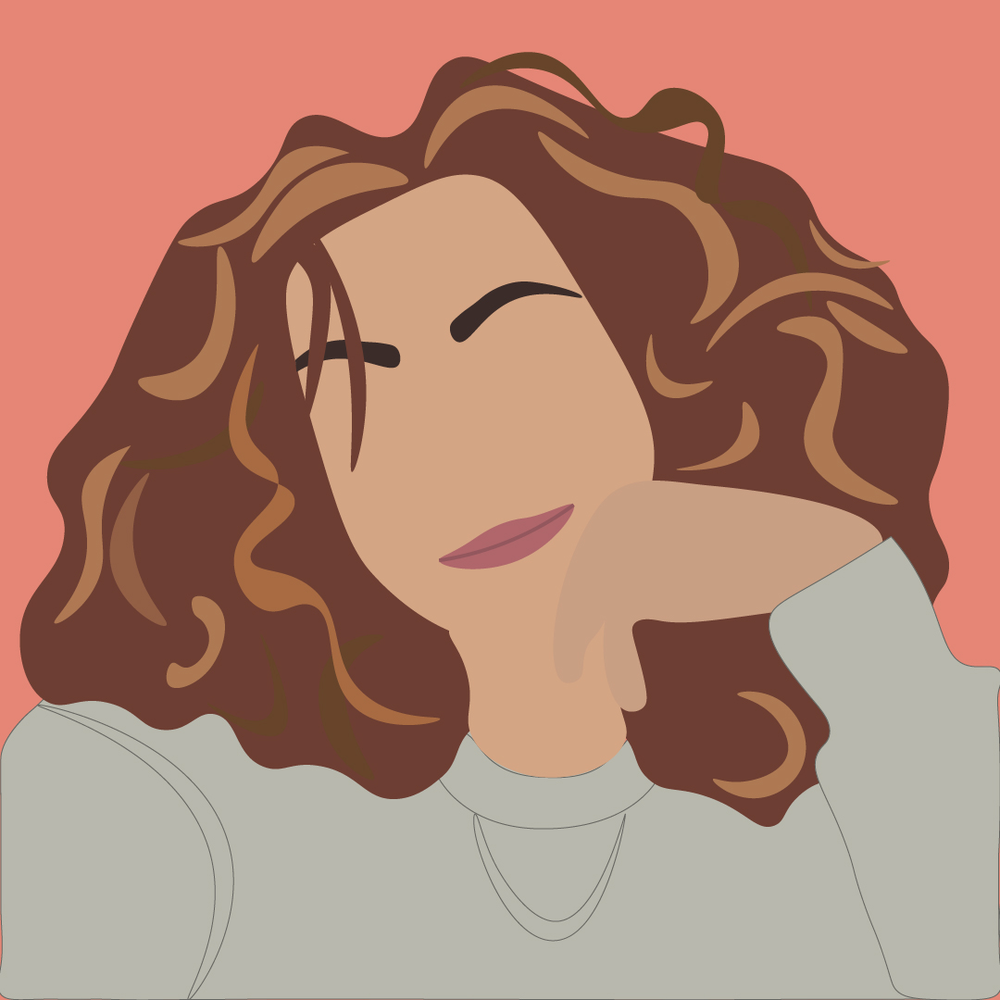
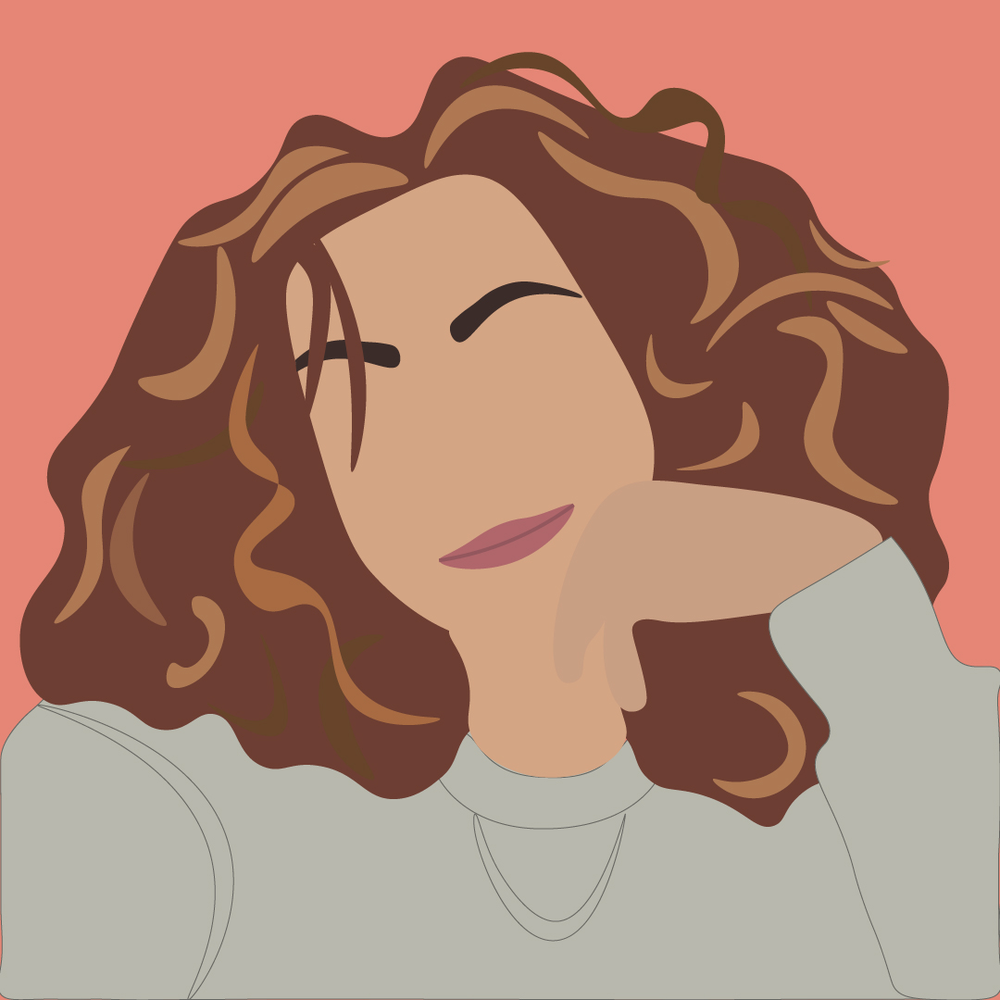
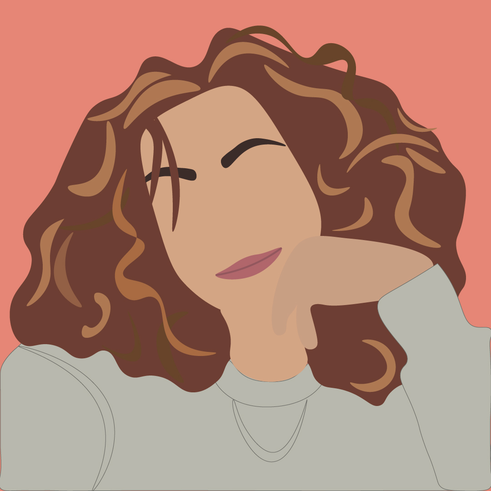

A third-year International Media &
Entertainment Management student.
I have a background in radio production,
films, audiovisual productions
content & concept creating!
Check out my work
During my studie at Buas,
I was with 2 other fellow students responsible for the radio of Buas
It was a cool experience, even more because it was nice to try to make people happy during Covid-19 pandamic, with the content we made.
During my studie at Buas,
I was with 2 other fellow students responsible for the radio of Buas
It was a cool experience, even more because it was nice to try to make people happy during Covid-19 pandamic, with the content we made.
During my studie at Buas,
I was with 2 other fellow students responsible for the radio of Buas
It was a cool experience, even more because it was nice to try to make people happy during Covid-19 pandamic, with the content we made.
During my studie at Buas, I was with 2 other fellow students responsible for the radio of Buas It was a cool experience, even more because it was nice to try to make people happy during Covid-19 pandamic, with the content we made.



During my studie at Buas, I was with 2 other fellow students responsible for the radio of Buas It was a cool experience, even more because it was nice to try to make people happy during Covid-19 pandamic, with the content we made.